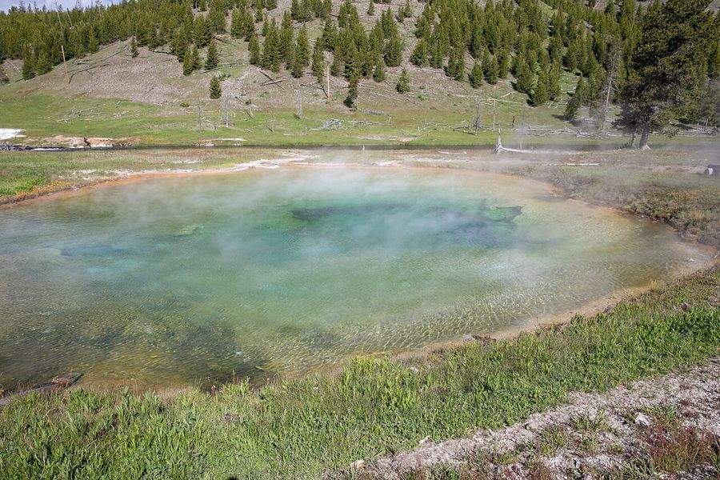
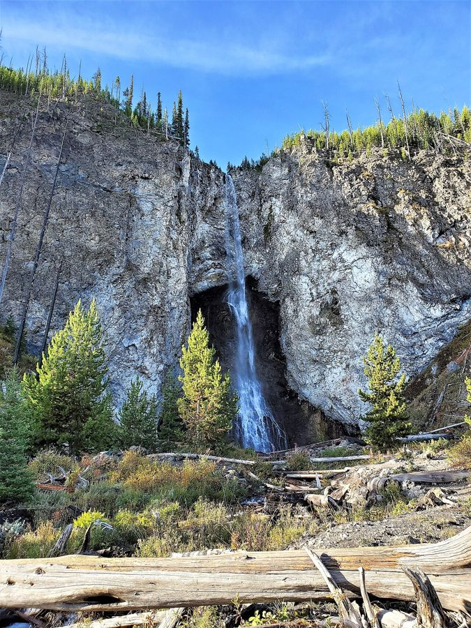

The route starts here. Follow the marked trail toward Fairy Falls.
Photo: NPS · Public domain · Wikimedia Commons

You have reached Fairy Falls. The route profile follows the trail from the named trailhead to this endpoint.
Photo: John Manard · CC BY-SA 2.0 · Wikimedia Commons